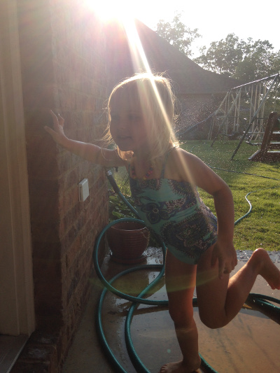

Adrian at Age 3
Swipe left on a picture to expand it, then "Swipe it right" to return it to normal size.
Sprinkler-running in the Backyard
Kite-flying at the Beach

Water Sports Pro at the Pool

Swipe left on a picture to expand it, then "Swipe it right" to return it to normal size.
Swipe left on a picture to expand it, then "Swipe it right" to return it to normal size.